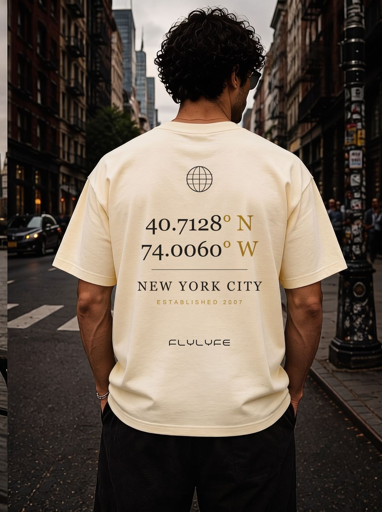

New York coordinates tee for city lovers
Wear your city's exact latitude and longitude across your chest. The 40.7128° N, 74.0060° W stamp turns New York's map coordinates into everyday streetwear.

Drop 02 · FLYLYFE · EST. 2007
NYC Coordinates Tee · House Music Streetwear
The Coordinates Tee anchors FLYLYFE to New York City with 40.7128° N, 74.0060° W — the place, pulse, and nightlife energy behind the brand.
$49.99 USD
Colors: Ivory · Sizes: S–3XL · Comfort Colors 1717 heavyweight, garment-dyed · DTF-printed to order in Los Angeles, USA · Tagless printed neck label
LOADING LIVE COLOR, SIZE, ADD TO CART, AND CHECKOUT OPTIONS…
Wear your city's exact latitude and longitude across your chest. The 40.7128° N, 74.0060° W stamp turns New York's map coordinates into everyday streetwear.
Built for house-music fans, DJs, and dancers, the heavyweight ivory tee holds up from the club to after-hours and back to the street.
The New York coordinates graphic makes a clean souvenir or gift for anyone who calls the city home or misses it. Free US shipping kicks in on two or more items.
The garment-dyed Comfort Colors 1717 blank gives this ivory graphic tee a broken-in, heavyweight feel that pairs with denim, cargos, or shorts year-round.
Premium cotton streetwear fit, sizes S–3XL. True to size with a relaxed drop.
Comfort Colors 1717 heavyweight, garment-dyed, 100% ring-spun cotton — chosen for streetwear structure, print clarity, and day-to-night wear. DTF transfer print made to order in Los Angeles, USA, with a tagless printed inside-neck label.
A lighter statement piece that pairs well with black denim, cargos, and neutral layers.
They're 40.7128° N, 74.0060° W — the exact latitude and longitude of New York City, printed in a cartographer's-stamp style on the front.
This one is printed on the Comfort Colors 1717 blank: a heavyweight, garment-dyed, 100% ring-spun cotton tee, finished with a durable DTF transfer print.
It's a unisex cut offered in sizes S through 3XL, all in the ivory colorway.
It's $49.99. US shipping is a flat $4.75 and free on two or more items; international is a flat $19, and it ships worldwide.
Each tee is printed to order as a DTF transfer in Los Angeles, USA, with a 7–10 business-day production time.
FLYLYFE ships worldwide — international rates are shown at checkout. US shipping is a flat $4.75, and orders of 2 or more items ship free automatically. Every tee is printed to order; production typically takes 7–10 business days before it ships.
Every FLYLYFE tee is printed to order. Unworn, unwashed tees in original condition can be returned within 30 days of delivery for an exchange or refund — email hello@flylyfe.com to start a return.
Wash cold inside-out and tumble dry low to preserve the print and garment color.
Complete the fit — pair it with the NYC subway token graphic tee, our house music graphic tee, and the After Hours late-night tee.